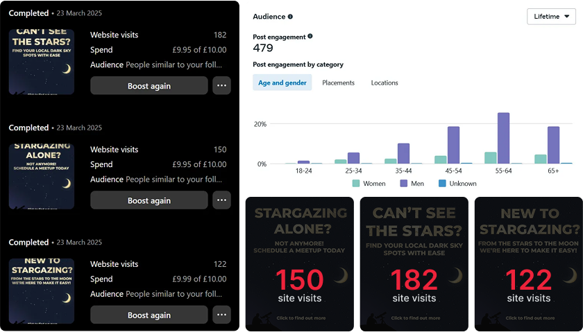

Artist loading...
Track loading...
Album loading...
aboutMe.txt
Hi! I'm Luka, a junior UI/UX designer based in the West Midlands and recently graduated with a BA(Hons) in Marketing Communications.
I love to solve problems creatively and making digital experiences that feel more human. I'm detail-oriented, quick to learn, and endlessly curious about exploring new tools and ideas. Nothing excites me more than seeing a concept come to life, whether that's an app or a website!
I designed and coded this portfolio from scratch as a space to showcase my UI/UX work and experiment with HTML, CSS, and open-source tools. It's a reflection of my love of learning, creating, and building things from the ground up!
Want to collab or chat? Pop me an email!
lukakolesnykova@protonmail.comMy Projects


Gallery


Last listened...
Artist loading...
Track loading...
Album loading...
Languages
Hello there! I speak English, Russian and learning Japanese!

Привет! Я говорю по-русски!
日本語を勉強している
Frogcast
A one week design sprint to create a prototype weather app designed for a specific demographic, in my case for children, within Marvel.
Children want to know what the weather is, but most weather apps are complicated and information dense as they are designed with adults in mind. Kids need a simpler, more visual-centric user interface that is quick and easy to understand, keeping them engaged long enough to check before school or playtime.

Through a P.A.C.T. analysis, in order to make it more suitable for my demographic, I identified the key points to keep in mind. Children have smaller hands and typically less motor skills so will need clear large buttons. They'll most likely check before heading out somewhere, typically school or playtime, so they won't be using it for a long period of time. They are likely to be checking with a parent around, on a larger device such as a touchscreen tablet.

Children are naturally drawn to bright colours, large buttons and friendly characters, all of which support learning comprehension. Research has shown that character-based engagement helps children retain information and stay interested.

The Frogcast colour palette is simple, bold and colourful in order to keep children's attention.

A few iterations of what a frog character, who would guide kids on each screen, could look like with various shapes and proportions. I asked people which their favourite was, and the majority was between 2 and 3, so the final concept combines both iterations.

Some concept sketches of how today's weather could be displayed.

I wanted to have a 'Dress Up' minigame, where kids would get to dress up the frog based on the current weather (e.g. in a raincoat if it was raining).

Lo-fi wireframe sketches in order to gauge how the app will function, as well as how many screens would need mocking up.
Simple homescreen with focus on the frog character. The background and frog will change depending on the current weather, with a simple line reminding kids of relevant information (e.g. bringing an umbrella if its raining, wearing suncream if its sunny). The daily and weekly view will share their designs and have big icons displaying the weather for each hour/day.

Part of the weather app would be a minigame where depending on the current real life weather, kids would get to dress up the frog character in relevant clothing. As well as a fun addition, it would also help teach young kids on what clothes to wear depending on that day's weather.
Because of the tight time constraints, I wasn't able to fully mockup what the other minigames in the game section would look like. If I were to continue, I would mockup some of the games as well as mockup what the dressup minigame & other games might look like in different weather scenarios. However, the time limit was a good learning experience in what to prioritise within the creation process, especially since this prototype unlike my other ones were done in Marvel rather than Figma, so I spent some of the time learning Marvel.
Additionally, with more time, it would be great to test this app prototype with actual children to see what their opinions on the app would be and see how they interact with it to improve upon the base design.
Overall, I think the app achieved its purpose through being suitable for its target audience and I learnt a lot about working to time constraints.
Falmouth Food Co-Op


A prototype mobile app for Falmouth Food Co-Op, a community-run online grocery store selling produce from local, non-industrial farmers. This app was designed to simplify the current ordering process.
This project was for a university solo brief to work with a local, small buisness owner in Falmouth.

The existing Falmouth Food Co-Op website is confusing and difficult to use, which often leads to discouraging new users from placing orders. Many of these users want to support local farmers and share the Co-Ops beliefs, but strugles with the ordering system often leads to frustration and missed sales opportunities.

When a member of the Falmouth Food Co-Op spoke at our university, he discussed how passionate the Co-Op is at putting money back into the local economy, rather than big supermarkets which do not reinvest their money into the community.
The biggest pain point he stressed was how their current userbase struggled with using the website to place orders, and this may deter them away from using the site again in the future.
He mentioned that rebuilding & redesigning the website wasn't be an option due to the cost of resources that had already been used to set up the website, though the Co-Op was interested in looking into producing a mobile app to provide a more user-friendly option for ordering.

I interviewed a first-time user to walk me through their feelings and experience while using the site to put into an empathy map. I found similar pain points, such as confusion during the ordering process, unclear navigation and frustration.
I evaluated the current FFC ordering process on their site. I then simplified into a more intuitive, mobile-first flow inspired by other grocery apps to mirror how users actually shop.

Wireframes with basic userflow to get a feel for how the app will work.

I simplified down & refined their existing colour palette, which was originally a bit overwhelming. I kept the broad range of colours to reflect the range of the produce they sell and the people they work with.
Simple onboarding to quickly direct users to their grocery shop.

Simple homepage navigation for each category & sub category.
View of what within the subcategory looks like as well as the product view.
Check out is one screen, with a card for users to quickly enter their details and where they want their groceries to be delivered to be collected.

Search tab, favourites feature, notifications feature and account view.
This was a great opportunity to work closely with a local buisness, as well as learning how to simplify an existing system without changing its backend. Translating their complex site into a clean, intuitive mobile-first UX was a valuable design challenge. After the project, I spoke with a member of the FFC who was really impressed, and he mentioned how the Co-Op was looking to get funding to turn it into a fully functional app, which was really exciting!
Dark Skies App
Dark Skies is an app designed to make stargazing accessible for everyone by helping people discover safe, local dark sky locations.
This project was developed as part of my university's 'Start Up' module. I was in a team of 5 and my role was UI & MVP Designer.


Many people want to experience stargazing but can't because good dark sky spots are hard to find, in far out observatories, or hidden in word-of-mouth insider channels. This makes stargazing feel inaccessible for beginners and casuals.
Before creating Dark Skies, we wanted to understand what makes stargazing both inspiring and difficult for people. Through competitor research, surveys, and a small focus group, we discovered a clear gap in local discovery.
We compared two most of our most similar competitors: Dark Sky International and Go Stargazing.
Both lacked accessibility and immediate local coverage, showing a gap for a mobile-first, user-friendly option.
Our survey reached over 17 participants from across our university campus as well as online stargazing communities.
Most respondents were casual stargazers, drawn to the awe and beauty of the night sky rather than technical astronomy. They often stargazed from convenient spots such as their gardens, beaches or while walking their dog.
The biggest challenges highlighted were:
To identify which user need to prioritise, we ran small-scale A/B tests via Instagram ads.
We wanted to compare three different needs:
Each ad linked to a temporary landing page at darkskies.app, where users could sign up for a newsletter. This helped us both gauge interest and recruit participants for a later focus group.
In total we got...
The discovery need got the most clicks, showing the most user demand.
Participants said they already had friends to go stargazing with, so they didn't need social features. Instead, they wanted reliable, safe local spots that were easy to find. Safety, time, and convenience were recurring concerns.
Using insights from our survey and focus group, we developed a user persona.


Capturing the general vibe of the Dark Skies brand. Simple, intuitive but unique.
Instead of the usual purples and blues used in astronomy apps, we used red and black, inspired by red light filters on phones stargazers use to protect their night vision. This not only makes the app visually distinct but also functional with real stargazing habits.
 Basic user flow flowchart. From the first launch, users can immediately start searching for nearby dark sky
locations with ease.
Basic user flow flowchart. From the first launch, users can immediately start searching for nearby dark sky
locations with ease.

High fidelity wireframes built following Material Design principles for familiarity and ease of use.

Montserrat was used due to it's legibility and urban feel, especially as many Dark Skies users are likely to be living in urban areas.

Dark Skies uses a mainly dark colour palette: deep blacks with a subtle blue tint (like the night sky) with a bold red accent for contrast.

Designed to immediately show clear skies nearby and quick visibility info (e.g. light pollution and cloud coverage)
Users can quickly explore nearby spots and filter by accessibility and distance.


Each location includes essential information like visibility, accessibility and weather, as well as specific to stargazing info such as the current moon phase and planet visibility.

Users are encouraged to easily share their favourite unknown dark sky locations for other users to explore!
It was really fulfilling to see Dark Skies grow from a basic idea into a very nearly real product, especially one based on real user needs.
This project taught me the value of small, easy user tests, such as social media A/B experiments and surveys, especially in the beginning of a project, which led to a better overall product.
If I was to revisit this project, I'd gather feedback on the current design from our newsletter sign ups using a service like UserTesting to further improve it to our user's needs.
KneeGuru
During my internship at Flowmoco, I was given the opportunity to redesign KNEEguru, a long time client of theirs. KNEEguru is a site dedicated to helping people understand about and recover from knee injuries. It hosts educational articles, talks from knee experts and resources & support for patients around the world.
The existing KNEEguru site was visually dated and difficult to navigate. The structure & design of the content was inconsistent, making the overall experience confusing to navigate for users. As Flowmoco was updating the backend of the site, the site needed to be migrated from an older CMS, so the redesign had to keep in mind backend limitations, such as building with modular content blocks.
The KNEEguru redesign is now live, still preserving its wealth of trusted medical information but now presented in a lot more user-friendly way. The updated CMS blocks should make it easier for KNEEGuru to update their site as well as making making room for future scalability.
Working with an existing backend and legacy content was a great learning experience. Collaboration with the dev team through frequent meetings made sure we were all on the same page and was an invaluable opportunity. Seeing my redesign live on the client's site feels really rewarding!
Rubbish Bin
thanks.txt
Special thanks to:
Clarke Bethell for help with the Javascript
Catppuccin for the theme for this site <3
Coded using VSCodium
Folder icons edited from the Catppuccin Papirus Folder theme
Hosting done through Cloudflare Pages
umami.is for being a great, open source alternative for analytics
W3Schools for being the GOAT as always
awesome.mp4